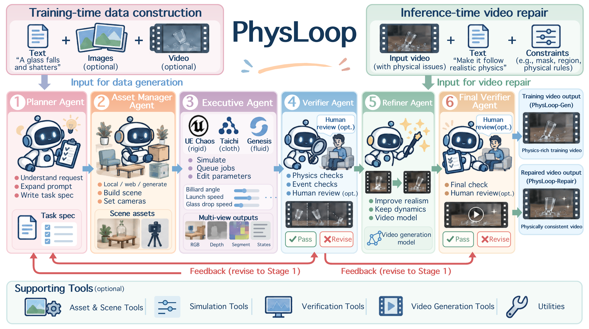
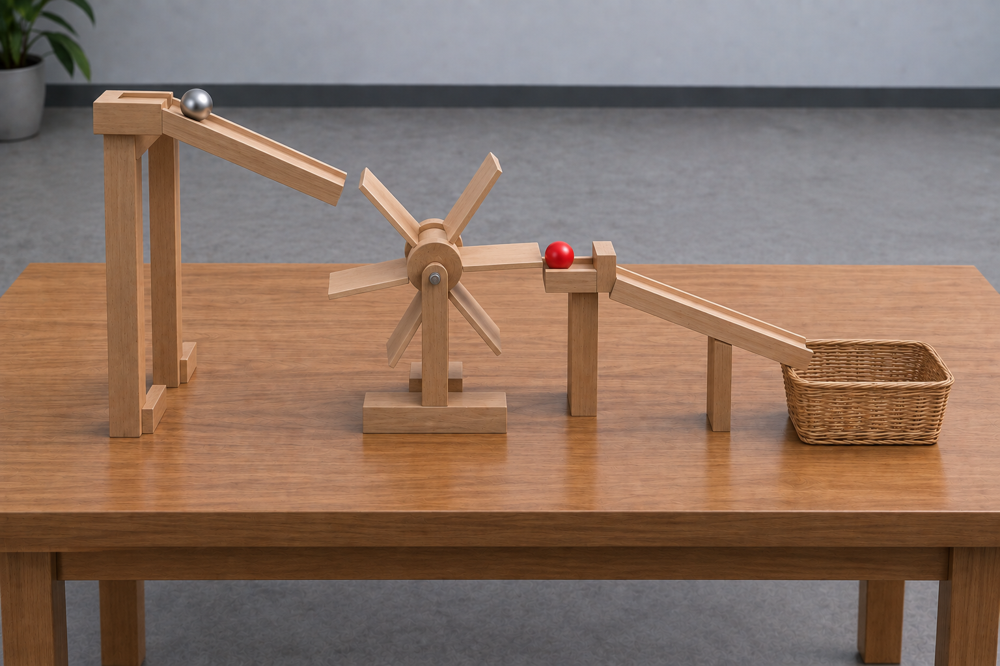
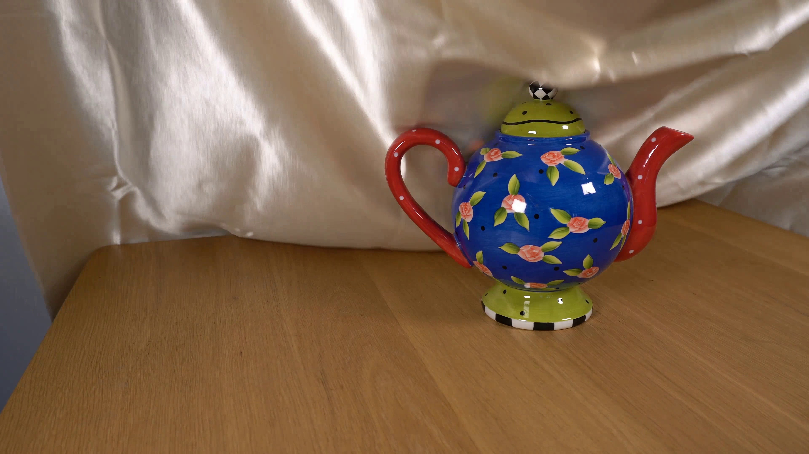
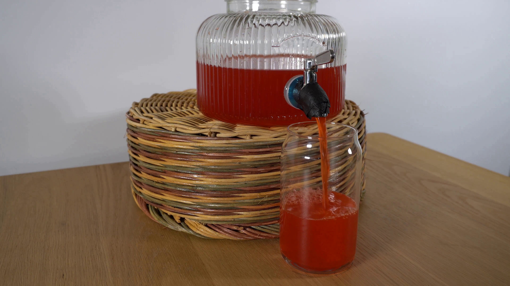
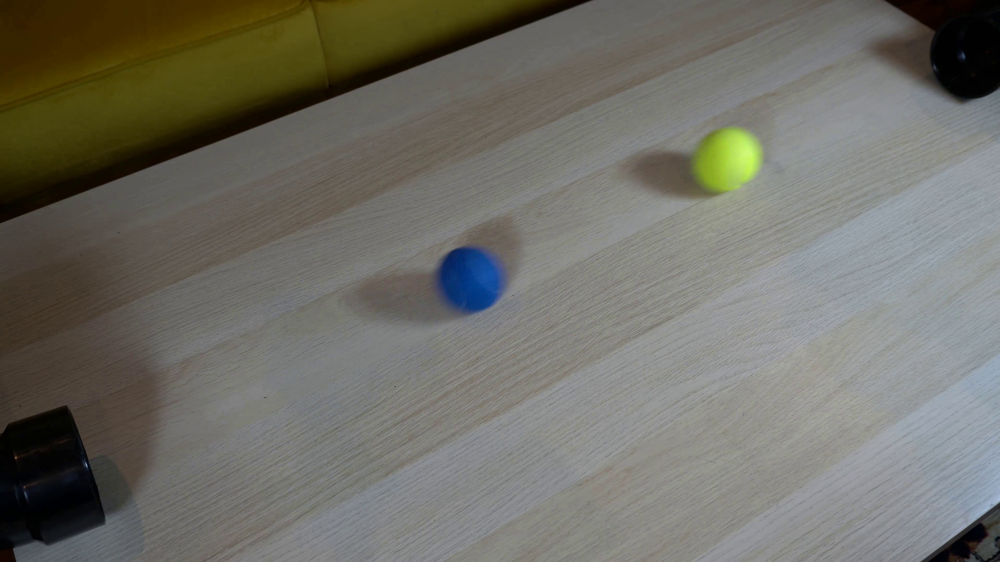
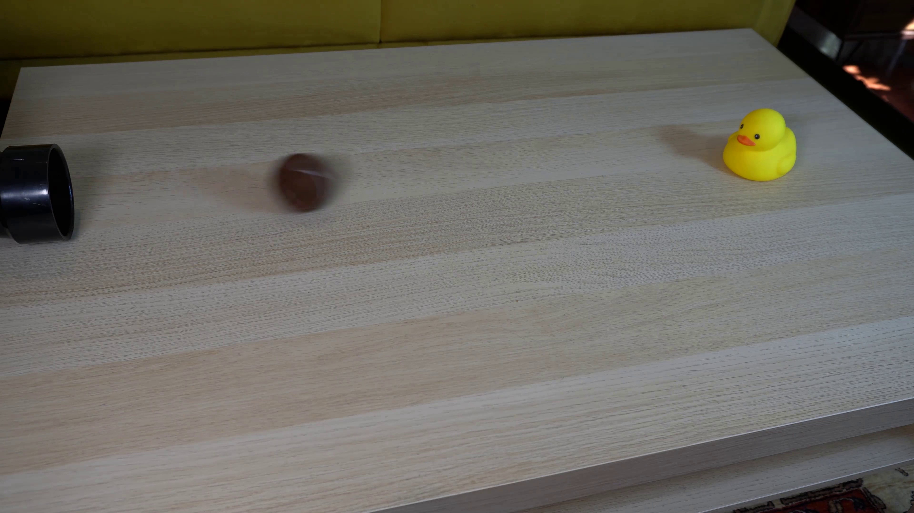

Billiard break
One cue ball breaks a triangular rack of fifteen balls. The balls scatter and rebound from the cushions.
PHYSICS-AWARE VIDEO GENERATION & REPAIR
* Equal contributions · ‡ Industry advisor · † Project lead · § Corresponding author
THE FRAMEWORK
From a requested event to executable physics, visual refinement, and evidence-based revision.

SEE PHYSLOOP IN ACTION
Four applications. Browse the examples in each carousel.
One cue ball breaks a triangular rack of fifteen balls. The balls scatter and rebound from the cushions.
An S-shaped domino chain topples in order and knocks down the ornament at its end.
Fifteen suspended colored pendulums swing at different natural periods, producing a visible phase wave. Keep their connected support frame and individual identities.
Release two stacks of five open cardboard cartons on a wooden platform: one aligned and one offset. Let gravity and contact determine which stack remains stable.
A horseshoe magnet removes the steel base of a covered stack. The stack collapses and the cloth slides and settles on the tabletop.
A red ball rolls down a wooden ramp, topples six dominoes and actuates a seesaw that launches a blue ball toward a small bucket.
A falling ball turns a paddle wheel, releasing a second ball down a ramp into the basket.

A silk cloth settles over the teapot and follows its shape.

A beverage dispenser pours red liquid into a clear glass.

A blue ball and a yellow ball roll from opposite pipes, meet and separate.

A brown tennis ball rolls out of a black pipe and contacts the yellow rubber duck on a coffee table.

A yellow tennis ball rolls out of a black pipe and climbs a cardboard ramp supported by a blue block.

Remove the yellow middle support from a five-block stack. The upper pair should tilt and descend as support is lost, while all five blocks remain present.
One steel ball hits three intact glass panels in order. Contact releases shards that fall and settle on the floor.
A connected outer branch topples while the disconnected inner ring and most front blocks remain standing.
Pick the red-marked shipping carton and place it in the green tray, retaining the two distractor cartons.
Grasp and lift the yellow mug, tilt it over the receiving mug, pour a continuous stream, then upright and withdraw.
Two grippers grasp the back corners of one thick pink cotton towel, lift, fold it in half, release and retract.
EVALUATION
Table layout follows the current manuscript. Model labels, protocols, and results remain to be finalized.
| Method | Human (Gen) | Model (Gen) | Task | ||||||||
|---|---|---|---|---|---|---|---|---|---|---|---|
| Phys. | Real. | Causal | Win | PC | SA | IQ | AQ | Gen | Repair | P-IQ | |
| Video Generation Models | |||||||||||
| Gemini Omni | — | — | — | — | — | — | — | — | — | — | — |
| H3 | — | — | — | — | — | — | — | — | — | — | — |
| Seedance2.5 | — | — | — | — | — | — | — | — | — | — | — |
| Seedance2.5 | |||||||||||
| Claude Opus5 | — | — | — | — | — | — | — | — | — | — | — |
| KimiK3 | — | — | — | — | — | — | — | — | — | — | — |
| GPT-6 Astra | |||||||||||
| H3 | — | — | — | — | — | — | — | — | — | — | — |
| Gemini Omni | — | — | — | — | — | — | — | — | — | — | — |
| w/o Refiner | — | — | — | — | — | — | — | — | — | — | — |
| GPT-6 Astra + Seedance2.5 | |||||||||||
| PhysLoop | — | — | — | — | — | — | — | — | — | — | — |
— = pending. No numeric result is published in this preview.
CITATION
Citation will be added with the paper release.
OPEN DATA
We plan to release PhysLoop-Gen, PhysLoop-Repair, and PhysLoop-100K on Hugging Face, in stages following acceptance.
| Component | Progress | Status | Hosting | Notes |
|---|---|---|---|---|
| PhysLoop-Gen | Preparing | Not released | Hugging Face (planned) | Generation evaluation; inputs and protocol under review |
| PhysLoop-Repair | Inventory pending | Not released | Hugging Face (planned) | Repair pairs and evaluation protocol under review |
| PhysLoop-100K | Counts pending | Not released | Hugging Face (planned) | Planned training corpus; accepted counts to be verified |
Download links, verified counts, and licenses will appear here and on GitHub. “100K” is a planned scale, not a released or accepted count.
Code & release updates on GitHub ↗